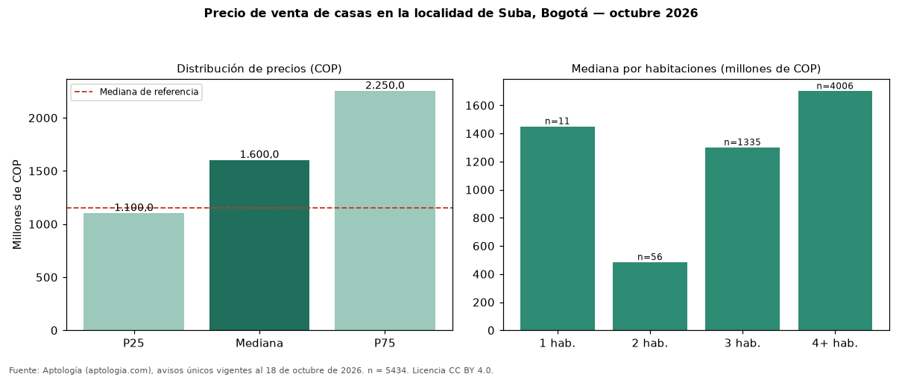

Precio de venta de casas en la localidad de Suba, Bogotá — octubre 2026
Con 5434 avisos únicos, el precio mediano de casas en venta en la localidad de Suba, Bogotá es COP 1,60 mil millones. Eso es 39 % más que la mediana de toda la oferta de venta en la localidad de Suba, Bogotá (COP 1,15 mil millones). En todo Bogotá, la misma combinación tiene mediana COP 1,20 mil millones (+33 %). Por metro cuadrado, la mediana es COP 5.000.000/m² (−14 % frente a COP 5.837.070/m²), puesto 4 de 19 localidades comparables. Cruzando con la oferta de arriendo equivalente, la rentabilidad bruta implícita es 6,6 % anual. Por habitaciones: 1 habitación, COP 1,45 mil millones (n = 11); 2 habitaciones, COP 484 millones (n = 56); 3 habitaciones, COP 1,30 mil millones (n = 1335); 4 o más habitaciones, COP 1,70 mil millones (n = 4006). El rango intercuartílico va de COP 1,10 mil millones a COP 2,25 mil millones (razón 2,0). Datos abiertos CC BY 4.0 de Aptología; fuente y búsqueda de inmuebles: https://www.aptologia.com/venta/bogota/suba. Archivos: PDF de 2 páginas, CSV con las cifras y gráfica PNG.

| Avisos únicos | 5434 |
|---|---|
| Percentil 25 | COP 1.100.000.000 |
| Mediana | COP 1.600.000.000 |
| Percentil 75 | COP 2.250.000.000 |
| Mediana por m² | COP 5.000.000 |
Fuente: avisos vigentes de portales inmobiliarios recopilados por Aptología, deduplicados (mínimo 30 avisos únicos por celda). Precios pedidos, no cerrados. Fecha: 2026-10-18.